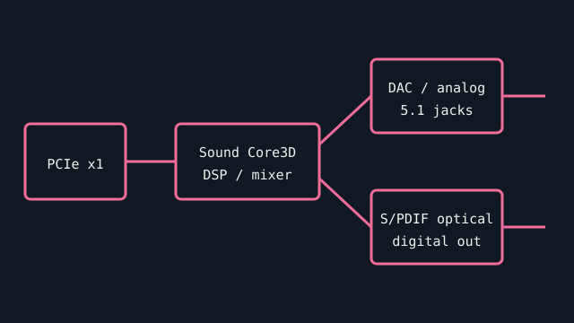

[ INDIVIDUAL COMPONENT // SOUND HARDWARE ]
Creative Sound Blaster Z (SB1500)
The standard Sound Blaster Z is the PCI Express x1 member of Creative’s Z series. This record excludes ZxR daughterboards and other separately identified Z-series SKUs.

Specifications
| Product ID | Creative Sound Blaster Z, SB1500 family; verify card label and regional SKU. |
|---|---|
| Bus | PCI Express x1 expansion card. |
| Connectors / I/O | Three 3.5 mm analog jacks for multichannel speakers, separate headphone/line or mic inputs according to software routing, and optical S/PDIF output; exact port map is in the manual. |
| Processing / conversion | Creative Sound Core3D audio processor; 5.1 analog speaker output and optical digital output. Converter performance depends on the analog output path; this record does not infer an undocumented DAC part number. |
| Drivers / OS | Creative supplies a model-specific Windows driver/control-panel package; supported Windows releases depend on the package version. No macOS/Linux manufacturer support is claimed. |
| Variant compatibility | SB1500 base card is not the SB1500A Sound Blaster Zx or SB1510 ZxR set. Do not assume included beamforming mic, shield, or add-on boards are present. |
Service & preservation
Keep the model label and driver package with the card. Before installation, inspect PCIe contacts, jacks, heatsink retention, and any internal headers; map the analog jacks using the matching manual rather than color alone. Save control-panel presets when migrating a working system.
Primary sources
- Creative — official Sound Blaster support and legacy downloadsManufacturer support source; search by Sound Blaster Z/SB1500 and use the matching manual/driver package.
- PCI-SIG — PCI Express specificationsStandards source for the expansion bus; physical slot fit alone does not confirm driver support.